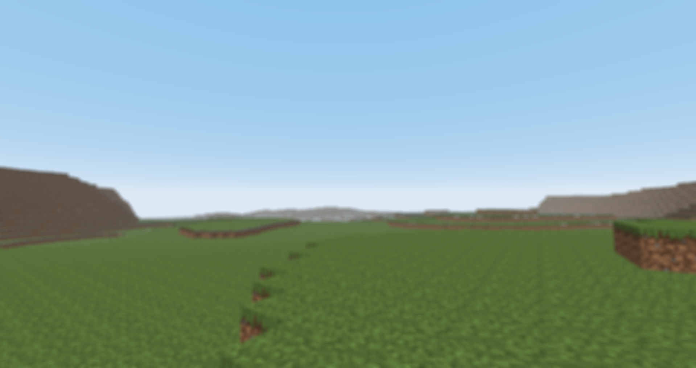

游戏项目
此之谓失其本心……吗？


CobaltEngine
基于C/C++打造的通用游戏引擎，提供一套易用的工具，让用户轻松地创建属于自己的2D和3D游戏。
精益求精，不断创新。
此之谓失其本心……吗？
基于C/C++打造的通用游戏引擎，提供一套易用的工具，让用户轻松地创建属于自己的2D和3D游戏。
我们的开发工具包和辅助类软件
Quantum3D，中文译名量子3D，是基于Java和LWJGL渲染引擎。该引擎提供最基本和基础的OpenGL和GLFW封装，以及一些渲染相关的工具类。
基于BukkitAPI（1.16）的综合性插件，具有模块化，轻量化，高性能等优势。目前该插件已经为一个MInecraft服务器安全运行了1300小时，拦截了176起熊服事件。
一些好看又好用的窗口应用


DeleNet的重置版，一款基于QT和底层系统API的轻量化内网穿透软件，拥有简洁易懂的使用逻辑和高度的开放性。